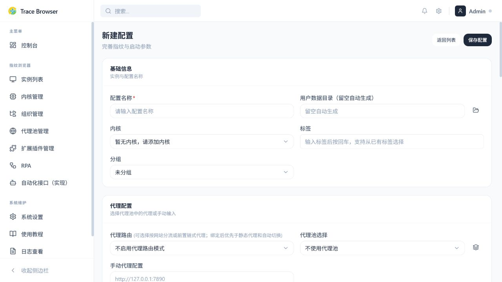
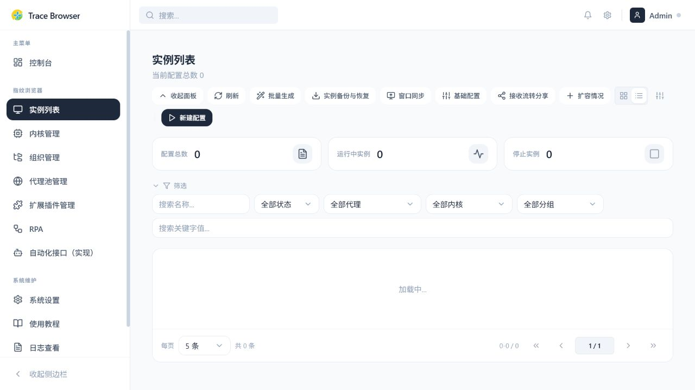
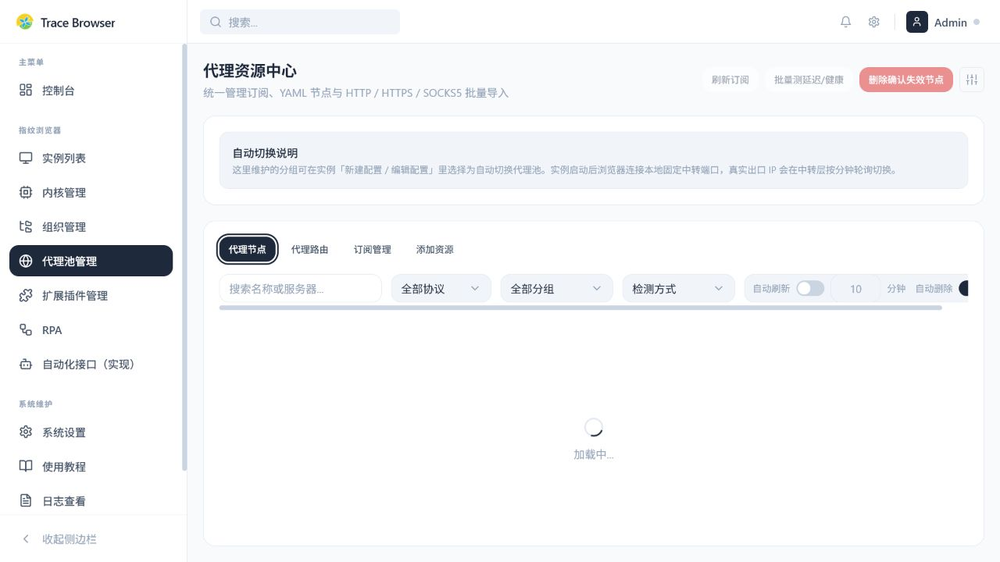
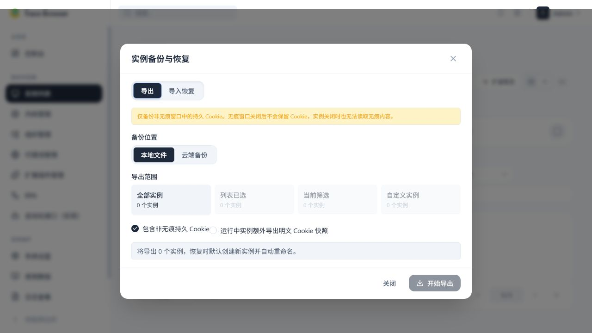
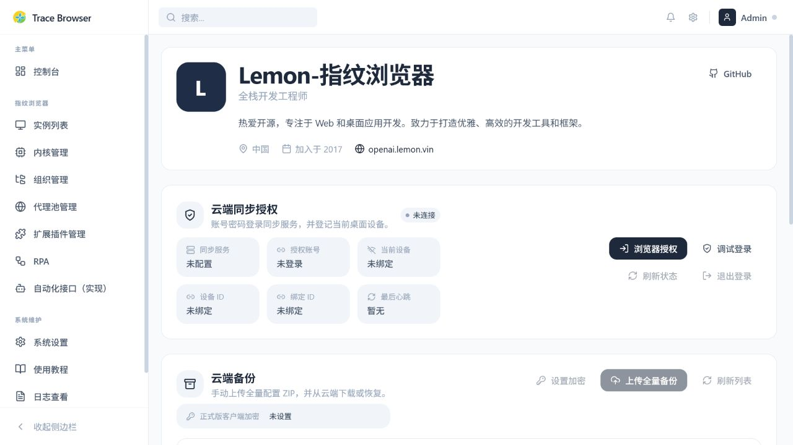
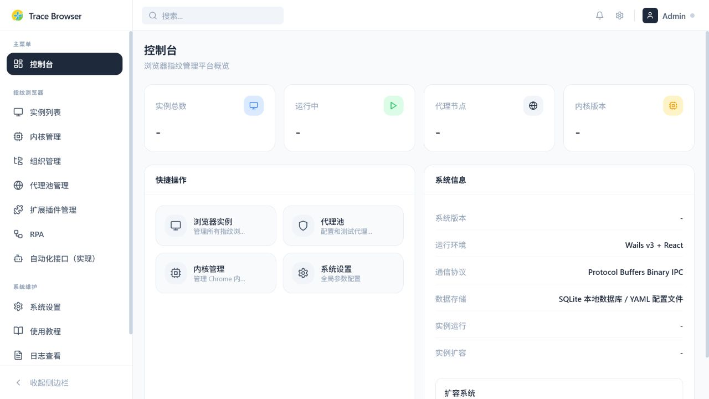
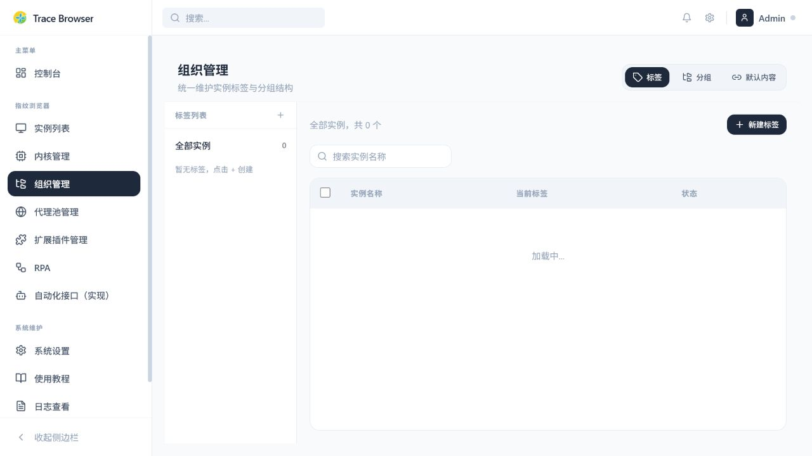
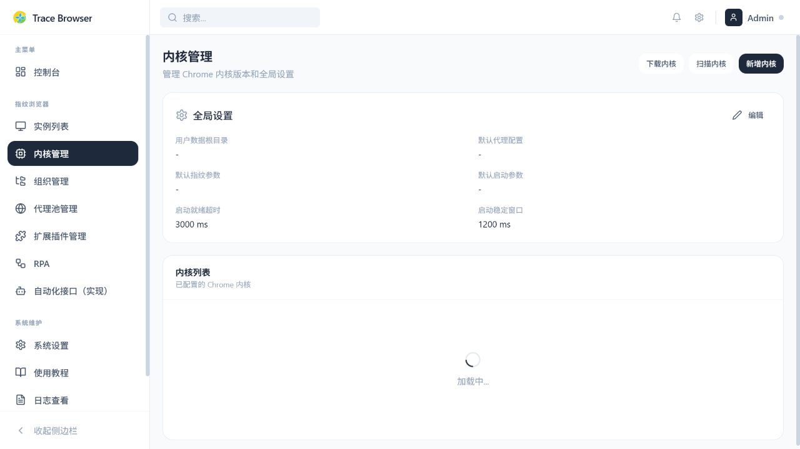

指纹实例
每个账号，
都有一套独立环境。
实例承载设备指纹、代理、Cookie、扩展和启动状态。创建、复制、筛选、批量启动，始终围绕同一个清晰的工作单元。
- 独立用户数据目录与设备画像
- 标签、关键字和分组保持归属清晰
- 可通过 Launch Code 与 CDP 接管
实例 / 03

01 浏览器操作系统
Trace Browser 把指纹实例、代理资源、Cookie、扩展、自动化工作流和备份恢复，收进同一个可控的本地工作台。

隔离好，随时接着用。
TRACE 系统 / 09 项能力
浏览器环境
应该好管、能复用。
隔离管理，随时复用。
02 工作台
把多账号运营、测试环境和自动化任务拆成清晰的浏览器实例，再用同一套规则持续维护。
指纹实例
实例承载设备指纹、代理、Cookie、扩展和启动状态。创建、复制、筛选、批量启动，始终围绕同一个清晰的工作单元。

代理资源调度
导入订阅、维护节点、执行测速和 IP 健康检查，再将代理绑定到实例或交给代理池自动分配。

Cookie 快照
持久 Cookie 与运行中 Cookie 快照都能按需纳入实例备份，换设备或恢复环境时少一点重复验证。

备份与同步
全量配置、实例级导出、云端备份和分享恢复，让换机、重装、归档和团队交接不再从零开始。

控制中心
实例总数、运行状态、代理节点、内核版本与系统事件集中呈现，进入工作区就知道下一步该做什么。

组织管理
标签、分组、默认启动页和窗口联动，让多个业务环境依然容易找到、批量操作和交接。
扩展管理
插件导入、状态查看、实例绑定与数据同步，放回可维护的工作区层级。
03 完整能力总览
从设备画像、网络出口，到自动化任务、外部接入和系统维护，Trace Browser 把浏览器工作所需的基础设施收进同一张能力地图。
环境基础
指纹、代理、内核、扩展和组织规则彼此关联，又保持独立。实例可以被创建、复制、清理、批量管理和持续维护。
设备画像
可配置浏览器品牌、操作系统、语言地区、时区、指纹种子、分辨率、CPU、内存、WebGL、Canvas、Audio、WebRTC 和媒体设备画像。
实例生命周期
实例支持新建、编辑、复制、删除、启动、停止、重启、详情查看和 Launch Code；可以保存快照、恢复版本，清空 Cookie 或用户数据时提供确认保护。
代理池与路由
手动代理、Clash YAML、订阅、Base64 内容和常见分享链接都能进入代理池，再按域名、路径、地区、健康状态配置分流或链式代理。
浏览器内核
扫描本地 Chrome、注册内核路径、校验版本、设置默认内核，也可以从官方下载页或自定义镜像下载适配当前平台的内核包。
扩展与组织管理
插件支持 ZIP、CRX、目录和地址导入，可搜索 Chrome Web Store；绑定支持共享、独占、自动绑定和源实例数据同步。标签、分组、默认启动页与书签规则可继承。

组织管理 / 实际界面窗口联动与批量操作
选择主控与被控窗口，同步键盘、鼠标、滚动、拖动和 URL。支持按行填充不同文本、批量打开页面、暂停恢复联动、宫格或堆叠排列，并可调整浮动工具栏和主控窗口颜色。
自动化操作
RPA 不止是一张画布：工作流可以录制、调试、复用、版本化、排期，并在运行历史里留下可追踪的状态。
工作流设计器
支持拖拽节点、普通 / 成功 / 失败连线、真 / 假分支、撤销重做、导入导出和工作流初始化。触发方式覆盖手动、启动、间隔、Cron、日期、访问网页、快捷键和右键菜单。
选择器与录制器
支持 CSS Selector、XPath、iframe、Shadow DOM、列表字段和表单控件拾取，展示匹配数量、稳定性分数和历史选择器。录制器可把点击、输入、滚动、下载和截屏批量转换为节点。
数据与消息
从文本、属性、链接、图片和资源 URL 采集数据，支持列表到详情、SKU 组合、JSON / CSV / 纯文本导出，也能接入邮箱池、验证码、通知和敏感字段脱敏。
复用与版本
工作流片段、模块组和节点包可以复用；工作流版本记录草稿、已发布和已恢复状态，支持从历史版本恢复并记录节点数、边数和定义大小。
计划、任务与运行数据
创建立即执行、定时和循环任务，配置开始时间、间隔、最大并发和运行实例。运行存储会保留变量、数据表、循环状态、点击对象池、详情结果、凭据和存储版本，并支持恢复与清理。
接入与流转
本地服务给脚本一个稳定入口，备份与分享给环境一条可回溯的流转路径。
Launch Server 与 CDP
Launch Server 默认监听本机 127.0.0.1:19876，支持健康检查、实例配置、组合选择器、Launch Code、临时启动参数和调用记录。返回实例 ID、PID、调试端口、CDP 地址与运行警告。
备份范围
全量备份覆盖配置、实例、代理路由、扩展绑定、标签分组、默认内容和 RPA 数据；实例级备份支持全选、筛选、已选或自定义范围，并可选择 Cookie。
云端同步与加密
支持账号密码或 OAuth 授权同步服务，登记当前设备并查看设备 ID、绑定 ID 与最后心跳。云端备份上传、下载、删除、恢复前校验，并可使用独立同步密码加密。
实例分享
创建实例分享包，生成分享文本或授权信息；接收方解析后按范围准备恢复，通过深链交给 Trace Browser，最终恢复成新的独立实例环境。适合换设备、账号交接和团队协作。
运维与技术
主题、语言、日志、更新和底层技术边界都被明确放在产品能力之外，方便用户判断如何部署、排障和升级。
系统设置
支持主题切换、多套内置主题、中文 / 英文、功能开关、日志等级、自动更新，以及配置初始化、导出和导入。

设置 / 实际界面日志与排障
查看应用日志、实例启动与停止错误、代理桥接错误、RPA 通知和 Launch Server 调用记录；记录耗时、步骤、错误阶段与页面 URL。
自动更新
检查新版本、展示版本差异、下载当前平台安装包、显示进度，便携版可自动替换并重启，安装版可唤起安装程序，同时保护配置、数据、内核和代理运行时。
技术基础
React、TypeScript、Tailwind CSS、Go、Wails v3、Protocol Buffers Binary IPC、SQLite、YAML、独立用户数据目录、CDP，以及 Xray、sing-box、mihomo / Clash 适配共同组成底层能力。
05 环境流转
Trace Browser 让环境可以被授权、保存和迁移。需要流转时，边界清楚；需要恢复时，路径明确。
把配置、实例、代理、插件和 Cookie 纳入全量或实例级备份。
通过同步服务授权或一次性分享码，把恢复范围交给可信设备。
导入前校验，恢复后继续运行，也可以通过 CDP 接回外部脚本。
06 推荐使用流程
从手动管理一个浏览器环境，到让外部系统接管多个实例，Trace Browser 为不同阶段准备了清晰的起步路径。
手动管理
多账号运营
RPA 自动化
外部接入
/api/health07 完整功能索引
以下按模块完整展开能力清单，所有功能、特性与使用边界直接可见，帮助你快速了解 Trace Browser 的工作台、浏览器环境、自动化和运维能力。
进入应用后，先用一屏看清当前运行态和下一步动作。
实例是 Trace Browser 里最小、最清晰、可以独立流转的环境。
让身份、设备和网络信号在一个实例里保持可解释的一致性。
把代理当作可检测、可分配、可追踪的网络资源，而不是一串临时文本。
需要更细的网络策略时，用路由规则把请求送到正确的出口。
把浏览器运行时也纳入版本和平台管理，保证实例启动有稳定底座。
插件不是散落在文件夹里的依赖，而是可以绑定到实例的工作区资源。
让账号、业务、国家和团队成员拥有稳定的归属关系。
多实例同时工作时，把重复动作变成可控的联动，而不是不断切换窗口。
用可读的节点图把浏览器动作编成可保存、可调试、可交接的流程。
从可视化拾取到手动修正，让页面交互既快又能在失败时被诊断。
把真实页面中的输入、等待和上传动作表达成可复用参数。
从列表到详情、从字段到 SKU，把采集结果整理成可继续使用的数据。
把注册、登录和批量验证中的邮箱等待，纳入流程的可观察状态。
把一次写好的自动化流程，变成可以复用、排期和迁移的长期流程。
把已设计好的工作流变成立即执行、定时执行或循环执行的任务。
运行不是黑盒：每一个节点的输入、输出、耗时和错误都能被追踪。
需要接入外部系统时，用本地 HTTP 与 Chrome DevTools Protocol 把实例交给脚本。
127.0.0.1:19876，HTTP + JSON，可选 API Key/api/health 检查服务、版本、协议与运行状态/api/profiles 查询 / 创建实例，/api/profiles/{profileId} 查询、更新、删除单实例/api/launch/{code} 按 Launch Code 启动，/api/launch 支持 ID、名称、关键字、标签、分组组合选择cdpUrl 与运行警告/api/launch/logs、/json/version、/json/list 与 /devtools/... 调试入口登录态和环境配置可以被检查、迁移，也可以按范围交给可信设备。
长期使用的稳定性，来自可维护的偏好、可读的日志和可回滚的更新过程。
官网也明确说明产品如何工作，以及哪些事情需要用户自己负责。
08 多主题配色
草木灰、落晖黄、远山绿、天空蓝、朱砂红、烟墨紫、暗夜黑，按心情和工作场景随时切换，清爽或沉浸都由你决定。
清爽克制的浅灰风格
09 前往
把浏览器环境隔离、自动化、备份和流转放在一个地方，少折腾，随时接着用。
支持全平台下载移入平台，选择架构与版本
官网统一转发最新版本，可按架构选择安装版或便携版。